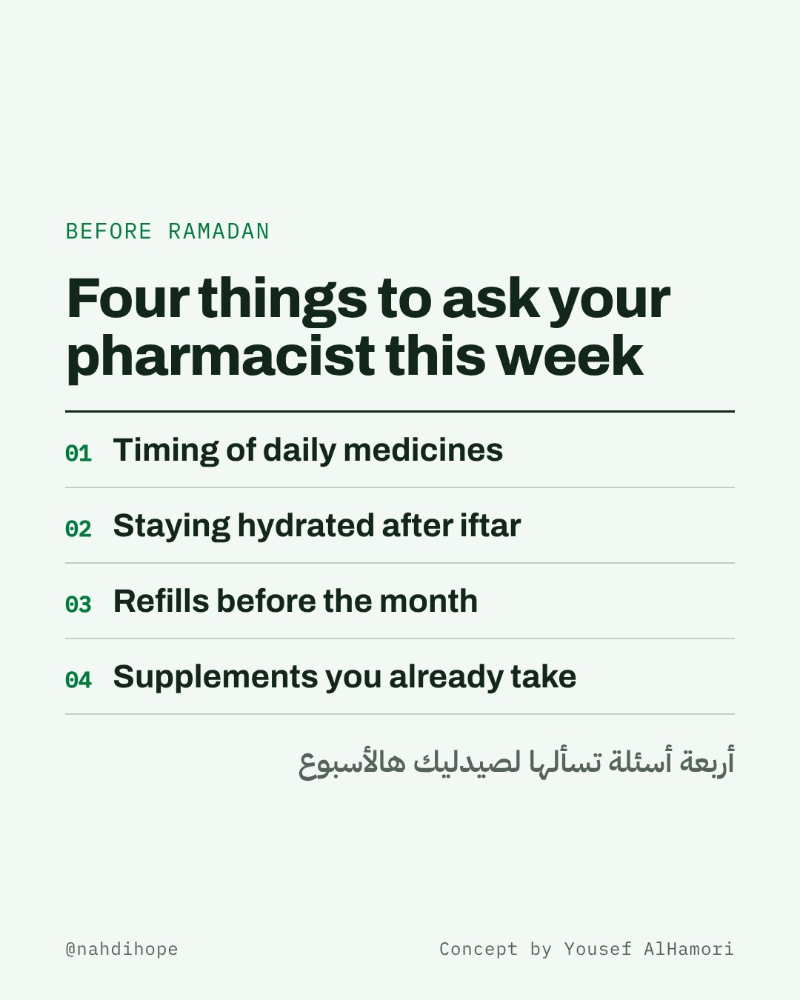
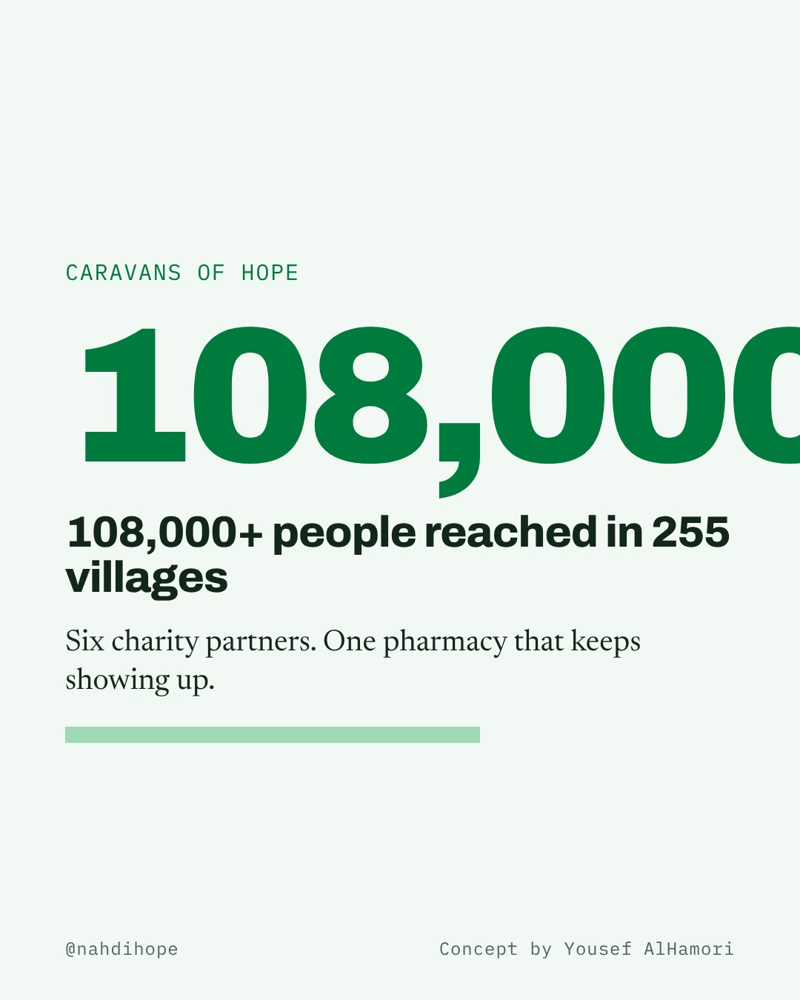

كل ليلة في رمضان نجاوب على سؤال واحد منكم. اكتب سؤالك، والجواب الخاص فيك عند صيدلي النهدي. #النهدي #اسأل_الصيدلي #رمضان
Ask the Pharmacist pillar: collects questions that fuel the nightly series.
Nahdi already calls itself a community pharmacy. A nightly Ramadan Q&A puts its pharmacists on camera.
One Question a Night is a Ramadan series where Nahdi pharmacists answer one follower question each night in a short video. Answers stay general and always end with ask your pharmacist, which sends people to the counter, Nahdi Care or the app instead of giving medical claims.
Unsolicited concept for portfolio purposes. I am not affiliated with Nahdi; its name and trademarks belong to the brand. Facts in the audit come from the public sources listed at the bottom. Targets are proposed, not actual results.
Three posts from the campaign, each with the caption as it would go out and the job it does. In production the framed areas become real photography or footage.


What the brand already does well on social, and the openings this plan goes after.
Lift Nahdi app sessions from social links by 15% during Ramadan (target) through a nightly pharmacist Q&A series.
Saudi parents managing the family's medicines and routines, who order refills on the app and stop by a branch after iftar.
In Ramadan the whole routine flips, and the health questions show up late at night, long after the clinic closes.
Lift Nahdi app sessions from social links by 15% during Ramadan (target) through a nightly pharmacist Q&A series.
Short videos where Nahdi pharmacists answer follower questions in general terms and point to the counter for personal advice.
Ramadan routines, hydration reminders, refill planning and Scan & Go tips, timed to the season.
Caravans of Hope field stories and Made in Saudi product spotlights.
Skincare consultations in branch, new arrivals and app offers for beauty shoppers.
| Platform | Role | Cadence |
|---|---|---|
| TikTok | Home of the pharmacist Q&A: one short answer per video, captions in Arabic. | Nightly in Ramadan, 4 per week after |
| Snapchat | Collect questions with stickers and push branch and app reminders after iftar. | Daily stories |
| Saveable wellness carousels, Caravans of Hope stories and beauty Reels. | 3 Reels and 2 carousels per week | |
| YouTube | Weekly compilation of the Q&A episodes as a searchable library. | 1 per week |
Ramadan, when daily routines change around iftar and suhoor and families plan refills before the month starts.
Every night of Ramadan, a Nahdi pharmacist answers one real follower question in under 30 seconds. The answer stays general and always closes with ask your pharmacist, so the series builds trust without giving medical claims.
How it spreadsFollowers send questions through Snapchat and Instagram question stickers or TikTok comments; each episode credits the follower's question and ends with a link to the app or the nearest branch. All scripts are reviewed by Nahdi's pharmacy team before posting.
| Time | Visual | Audio / text |
|---|---|---|
| 0 to 3s | Phone screen showing a follower's question sticker: Can I change when I take my daily medicine in Ramadan? | Notification sound, on screen text: سؤال الليلة |
| 3 to 8s | A Nahdi pharmacist behind the counter of a branch lit at night reads the question to camera. | Pharmacist (Arabic): سؤال مهم ويتكرر كثير |
| 8 to 15s | Medium shot of the pharmacist talking directly to camera, calm and warm. | Pharmacist: كل دواء له طريقته. جيب العلبة أو الوصفة ونرتب معك المواعيد بين الفطور والسحور |
| 15 to 21s | A customer hands a medicine box across the counter; the pharmacist writes a simple iftar and suhoor card. | On screen text: Ask in branch or visit Nahdi Care |
| 21 to 26s | App screen: refill order placed, then a quick Scan & Go shot in branch. | VO: Refill before the rush in the Nahdi app |
| 26 to 30s | Green end card with the series name and a note: General information only. Ask your pharmacist or doctor. | On screen text: Send tomorrow's question. Link in bio. |
A two week calendar, the creators I would brief, and how the account answers people in the comments.
| Day | Platform | Format | Pillar | Post |
|---|---|---|---|---|
| W1 W1 Sun | Snapchat | Story | Ask the Pharmacist | Question sticker launch: ask us anything |
| W1 W1 Mon | TikTok | Video | Ask the Pharmacist | Episode 1: medicine timing in Ramadan |
| W1 W1 Tue | Carousel | Seasonal Wellness | Four things to ask your pharmacist | |
| W1 W1 Wed | TikTok | Video | Ask the Pharmacist | Episode 3: staying hydrated after iftar |
| W1 W1 Thu | Reel | Community and Hope | A day with a Caravans of Hope team | |
| W2 W2 Sun | Snapchat | Story | Seasonal Wellness | Refill reminder with Scan & Go demo |
| W2 W2 Mon | TikTok | Video | Ask the Pharmacist | Episode 8: what to bring to the counter |
| W2 W2 Tue | Reel | Beauty and Offers | Skincare consultation in branch, start to finish | |
| W2 W2 Wed | Carousel | Community and Hope | Made in Saudi shelf: five products to know | |
| W2 W2 Thu | YouTube | Compilation | Ask the Pharmacist | Week 1 and 2 Q&A in one video |
| Tier | Creator type | Why them | The ask |
|---|---|---|---|
| Micro (10k to 50k) | Saudi mothers who share family routine and home organisation content | They plan the household's Ramadan routine and their followers ask the same questions. | One Ramadan routine reel that ends at a Nahdi counter asking a real question. |
| Micro (10k to 50k) | Licensed Saudi pharmacists and health educators on TikTok | They add professional credibility and know how to keep advice general. | Two duets with the Q&A series, scripts reviewed by Nahdi's pharmacy team. |
| Mid (50k to 250k) | Skincare creators focused on routines for the Saudi climate | They reach women and beauty shoppers who already buy skincare at Nahdi. | One in store skincare consultation vlog plus a story set with app links. |
Proposed targets and the tests that would tell us what to change after week one.
| Metric | Target | Why it matters |
|---|---|---|
| App sessions from social links | Target: 15% lift during Ramadan | Ties the series to orders and refills, the business goal. |
| Questions submitted | Target: 3,000 over Ramadan | Shows people trust Nahdi enough to ask, and feeds future episodes. |
| Average view through on Q&A videos | Target: 50% on TikTok | Checks that the answers hold attention in a short format. |
| Saves on wellness carousels | Target: 4% saves to reach | Saves show the content is useful enough to keep. |
Each major choice in this plan, matched to published research. Some studies cover the wider region or global audiences; the source says which. Full list on the research page.
A UCL study found it took an average of 66 days of daily repetition for a new behavior to become automatic, and missing one day did not significantly affect habit formation.
Daily repetition is how habits form, and a missed night does not break it, so a nightly series fits a 30 night month.
UCL News, reporting Lally et al. in the European Journal of Social Psychology, 200973% of social users say they will buy from a competitor if a brand does not respond on social, and nearly three quarters expect a response within 24 hours or sooner.
Answering real questions quickly is what people expect from brands, and for a pharmacy it builds the trust that brings refills.
Sprout Social, The 2025 Sprout Social Index: What consumers want on social, 20257 in 10 people in the UAE and Saudi Arabia actively seek Ramadan related content across digital platforms, and TikTok users are 1.2 times more likely to discover brands they had not considered before.
People actively seek Ramadan content, so fasting health tips meet a need families are already searching for.
Ipsos, TikTok Ramadan and Eid Study (1,600 adults in UAE and KSA), 202671% of parents in Saudi Arabia are on Snapchat, according to a study by Kantar and Snap.
Most Saudi parents are on Snapchat, so daily reminders on refills and routines reach the person who manages them.
Communicate Online, Saudi's Snapchat Community Hits 20 Million Milestone (Kantar and Snap study), 2022Will a nightly pharmacist answer series during Ramadan keep viewers coming back and drive more app refills than weekly health tips?
Ramadan test on TikTok and Snapchat: nightly One Question a Night episodes versus a weekly tips post, tracked with app deep links
30 nightly episodes, 4 weekly posts, app sessions from social links
Episode viewers return for 3 or more episodes at a 25% rate, and app sessions from social rise at least 15%